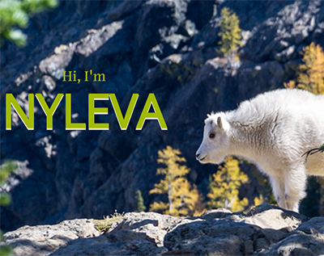
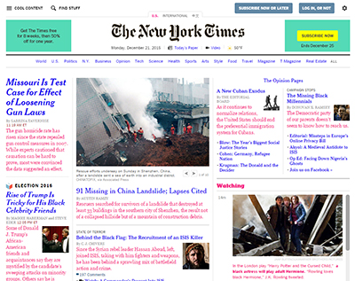

About Me
Projects
Fun Facts
Nyleva Corley
Web Developer, Information Architect and Content Strategist
I work for
Blackbaud
. We make software for nonprofits.
Give Me a Shout
Projects

About Me Responsified
Karma Clone

NYTimes Hack